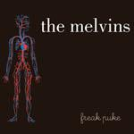
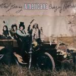
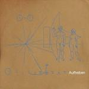

Music Reviews
-

The Melvins (Lite) Freak Puke
Freak Puke is the newest album from the reconsidered “Melvins Lite,” members Buzz Osbourne and Dale Crover allowing bassist Trevor Dunn to introduce some avant wisdom.
Sean Caldwell reviews... -

Neil Young Americana
Neil Young’s first Crazy Horse album in nearly a decade is a fuzz-drenched take on traditional American songs.
Forrest Cardamenis returns to... -

Clams Casino Instrumental Mixtape Vol. 2
Clams Casino returns with his second instrumental tape after a big year of producing names like A$AP Rocky, The Weeknd and Lil B. He's only gotten better.
Andrew Baer still loves this guy... -

Maximo Park The National Health
The Newcastle British rock band's fourth offering, and first not under Warp, would've been its most fitting: an electro-charged, but no less guitar-scorching record that seeks to thrill with stadium-sized aspirations.
Juan Edgardo Rodríguez is just as fed up with... -

Django Django Django Django
Django Django make psychedelic rock music like nobody else. The album is instantly pleasing but undeniably striking over time.
Andrew Baer has been letting this sink in for months... -
Rye Rye Go! Pop! Bang!
Three years late and crammed full of collaborations, the debut album from Rye Rye finds its star struggling to steal the limelight.
Gabbie Nirenburg reviews... -
_0.jpg)
Karin Park Highwire Poetry
According to the friend of all journalists Wikipedia, Karin Park was once nominated for the award of "the best Norwegian song of all time", and yet her UK-debut sees her starting out again as very much an under-the-radar act. So, were we right to ignore her, or were those Norwegians onto something?
Mark Davison is a bit smitten... -
Liars WIXIW
With their sixth album, WIXIW, Liars ponder the music electric.
Sean Caldwell reviews... -

The Brian Jonestown Massacre Aufheben
After seesawing between brilliance and buffoonery over the past decade, The Brian Jonestown Massacre get serious, get worldly, and commit themselves to Aufheben's mystical mind trip.
Check your Dig! references at the door... -
Future of the Left The Plot Against Common Sense
With a cult fandom's expectations to live up to, Future of the Left's third album is as vitriolic as ever, but is it an improvement?
Stephen Wragg reviews...